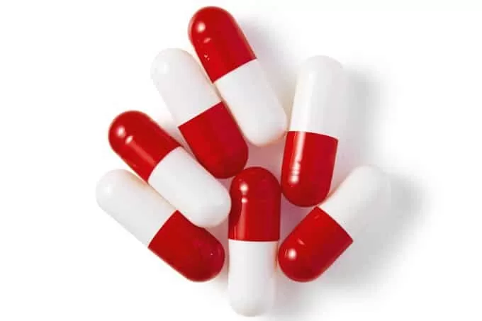
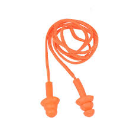
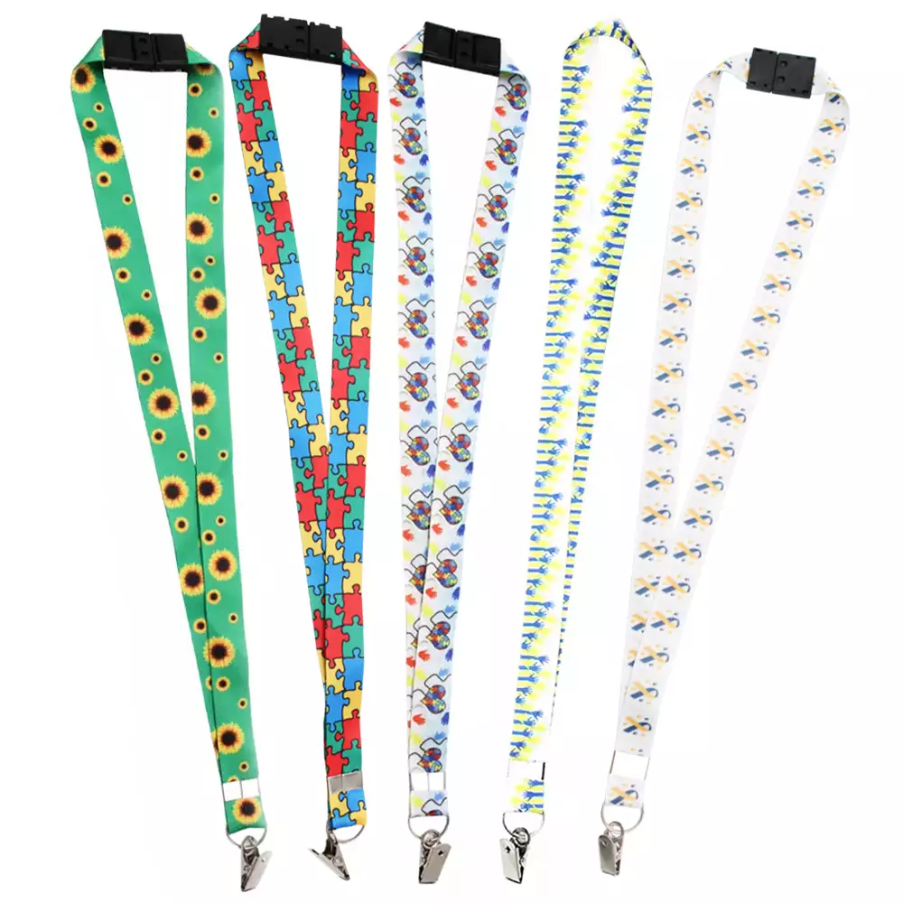
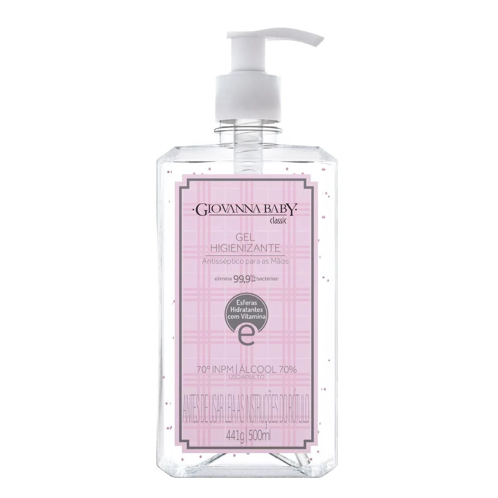
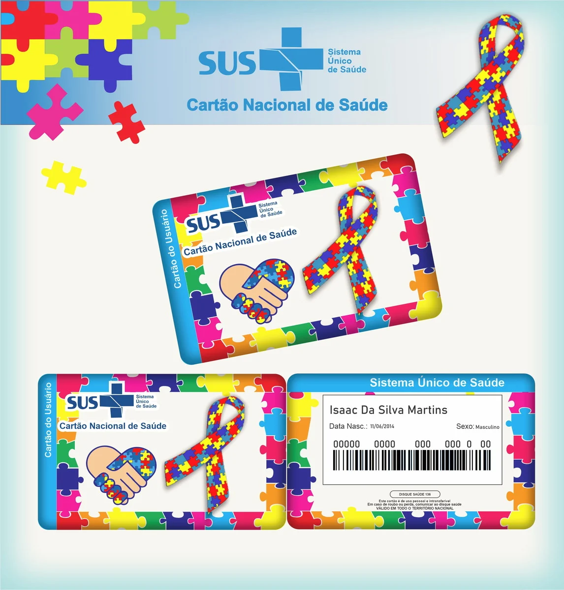
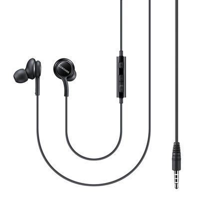
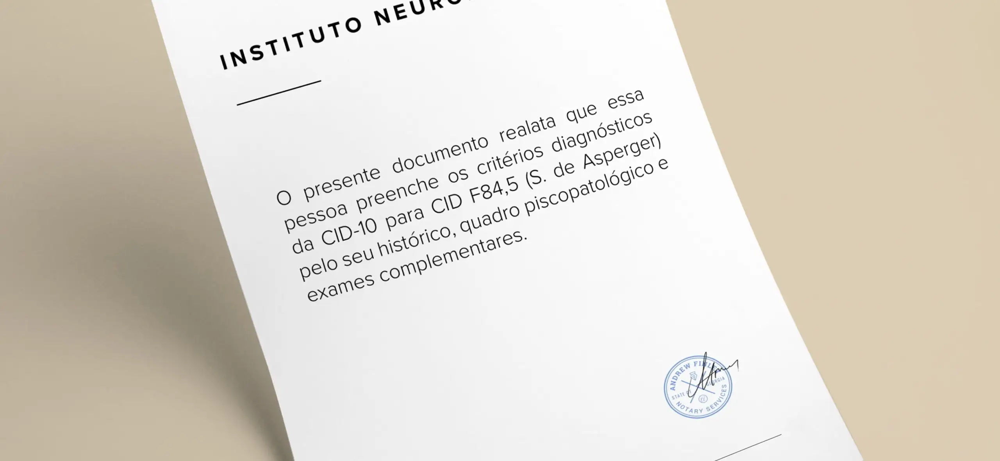
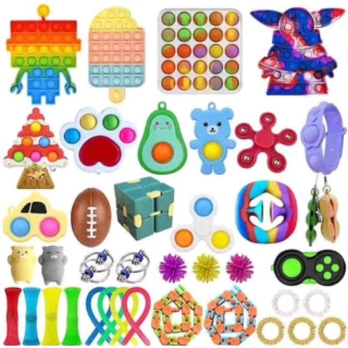
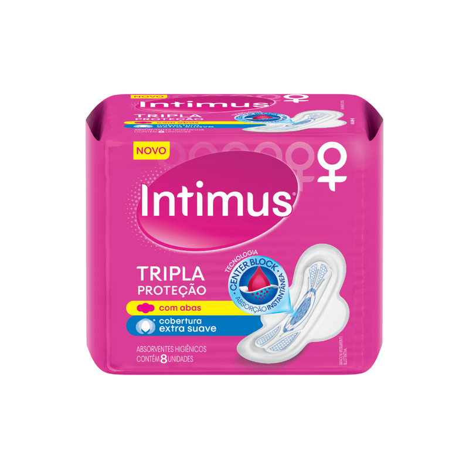

Pra sair de casa pode ser dificil pra vários, mas pra mim é pior... então fiz esse site pra me ajudar a separar coisas quando eu for sair, ainda mais eu que esqueço tudo

é sempre importante levar um abafador pois ele ajuda a evitar crises por estimulos sensoriais sonoros, além de que me ajuda também!

A carteira que tem meus documentos é muito importante, não deixe-me esquecer

acho que não preciso explicar
isso é extremamente importante, preciso tomar os meus remédios de crise e ansiedade e tals
as vezes o grande dói então é bom levar ambos!
é necessário pra certos suportes que preciso em minha vida e pras pessoas reconhecerem que eu sou Autista + TDAH (isso pode me ajudar)
é bom pra limpar as mãos, posso ter crise sensorial as vezes por texturas
isso fica no crachá então é importante
as vezes músicas me acalma
muitas pessoas pedem o laudo escrito (acho que pra segurança, talvez)
isso pode me acalmar também, é legal também
isso pode me acalmar em uma crise, então...
lá que eu menstruo, eu preciso
se tudo estiver ok (se tiver mais algo me lembre, por favor) pode sair de boa!